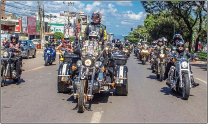

OS 52 ANOS
DE CEILÂNDIA
Ceilandeses de todas as idades se preparam para comemorar o aniversário de 52 anos da cidade, no dia 27 de março. A Administração Regional já está montando o cronograma do evento. O Jornal de Ceilândia é parceiro na realização e divulgação.
Além disso, o periódico tem programações próprias para festejar a data. Será no dia 24 de março, na Churrascaria Fogo do Galpão, com o ‘Almoço empresarial’. Tem ainda o Passeio Motociclístico de Ceilândia que acontecerá no dia do Desfile Cívico, também organizado pelo JC, em parceria com a administração. Este ano, em data a ser definida com comerciantes, será realizada a primeira Feira de Antiguidades. Mais informações pelo telefone: (61) 98452- 0101.
